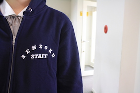
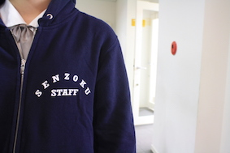

NEWS
実行委員が当日までの出来事などをレポートしていきます!
文化祭準備2日目![9/13]
 

文化祭実行委員には専用のパーカーがあります！当日もこのパーカーをきている生徒を見かけたらなんでもお聞きください！
総勢38名で今年の洗足祭にむけて様々な準備を進めてきました。本番まであと3日、全力で頑張ります！(^^)
茶道部と演劇部のリハーサルの様子です。茶道部では美味しい和菓子と一緒に一休みできる空間で優美な浴衣姿の部員たちがおもてなしをしてくれます。演劇部は”夢から醒めた夢”というミュージカルをやります。ミュージカルは演劇部としては初の試みだそうです！公演中、もしかしたらおばけに会えるかも！？お楽しみに！
文化祭準備1日目![9/12]
今日は全校生徒にパンフレットとチケットが配られました!去年までのチケットとは違い、今年はデザインが変わりました。
実行委員やボランティアのみんなで黙々とひもを通す作業は気が遠くなりそうでした。ありがとう！
明日もよろしくお願いします！まだ準備期間１日目、文化祭当日まで気を抜かず、各学年頑張って行きましょう！